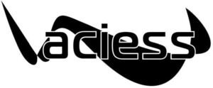

Trade Mark Journal No.2025/041 10 October 2025
WO0000001864001 (21)
Office of origin: Russian Federation
Date of International Registration:28 February 2025
Date of designation in the UK:
28 February 2025

- Class 21
- Autoclaves, non-electric, for cooking; indoor aquaria; wine aerators; buckets; cookie jars; candle jars [holders]; china ornaments; vegetable dishes; saucers; goblets; boxes for sweets; bottles; demijohns; vases; epergnes; fruit bowls; inflatable bath tubs for babies; bird baths; baby baths, portable; plungers for clearing blocked drains; waffle irons, non-electric; diaper disposal pails; ice buckets; mop wringer buckets; buckets made of woven fabrics; whisks, non-electric, for household purposes; cooking skewers of metal; towel rails and rings; clothing stretchers; hair for brushes; horsehair for brush-making; funnels; candle warmers, electric and non-electric; signboards of porcelain or glass; candle extinguishers; heads for electric toothbrushes; flower pots; chamber pots; glue pots, non-electric; cruets; decanters; large-toothed combs for the hair; combs for animals; tea cosies; abrasive sponges for scrubbing the skin; make-up sponges; sponges for household purposes; toilet sponges; sponge holders; toothpick holders; soap holders; table napkin holders; holders for flowers and plants [flower arranging]; tea bag rests; shaving brush stands; toilet paper holders; plug-in diffusers for mosquito repellents; aromatic oil diffusers, other than reed diffusers, electric and non-electric; ironing boards; cutting boards for the kitchen; bread boards; washing boards; crushers for kitchen use, non-electric; strainers for household purposes; smoke absorbers for household purposes; containers for household or kitchen use; kitchen containers; glass jars [carboys]; heat-insulated containers; heat-insulated containers for beverages; thermally insulated containers for food; glass flasks [containers]; closures for pot lids; chamois leather for cleaning; toothpicks; ceramics for household purposes; majolica; works of art of porcelain, ceramic, earthenware, terra-cotta or glass; kitchen grinders, non-electric; cleaning instruments, hand-operated; cabarets [trays]; utensil pots; couscous cooking pots, non-electric; flower-pot covers, not of paper; shaving brushes; make-up brushes; basting brushes; birdcages; baking mats; ladles for serving wine; polishing leather; hot pots, non-electric; glass bulbs [receptacles]; shoe trees; napkin rings; poultry rings; rings for birds; disposable aluminium foil containers for household purposes; coin banks; piggy banks; bread baskets for household purposes; baskets for household purposes; waste paper baskets; feeding troughs; automatic pet feeders; mangers for animals; lunch boxes; tea caddies; washtubs; earthenware saucepans; mess-tins; cauldrons; coffee percolators, non-electric; coffeepots, non-electric; coffee grinders, hand-operated; beer mugs; tankards; rat traps; pot lids; aquarium hoods; butter-dish covers; dish covers; cheese-dish covers; reusable silicone food covers; buttonhooks; reusable ice cubes; jugs; incense burners; watering cans; fly traps; insect traps; ice cream scoops; mixing spoons [kitchen utensils]; basting spoons [cooking utensils]; pie servers; cosmetic spatulas; spatulas for kitchen use; litter boxes for pets; butter dishes; material for brush-making; polishing materials for making shiny, except preparations, paper and stone; tablemats, not of paper or textile; noodle machines, hand-operated; lint removers, electric or non-electric; pasta makers, hand-operated; polishing apparatus and machines, for household purposes, non-electric; pepper mills, hand-operated; mills for household purposes, hand-operated; feather-dusters; brooms; isothermic bags; decorating bags for confectioners; bowls [basins]; pet feeding bowls; mosaics of glass, not for building; dishcloths; saucepan scourers of metal; soap boxes; mouse traps; nozzles for watering cans; pouring spouts; wine pourers; cake decorating tips and tubes; nozzles for watering hose; fitted picnic baskets, including dishes; toilet cases; floss for dental purposes; fibreglass thread, other than for textile use; cookie [biscuit] cutters; pastry cutters; sprinklers; syringes for watering flowers and plants; egg yolk separators; cotton waste for cleaning; wool waste for cleaning; cleaning tow; cold packs for chilling food and beverages; cocktail sticks; food steamers, non-electric; pepper pots; oven mitts; animal grooming gloves; gloves for household purposes; car washing mitts; polishing gloves; gardening gloves; pestles for kitchen use; droppers for household purposes; wine-tasting pipettes; droppers for cosmetic purposes; plates for diffusing aromatic oil; plates to prevent milk boiling over; dripping pans; trays for household purposes; trays of paper, for household purposes; lazy susans; candle holders; trivets [table utensils]; grill supports; menu card holders; knife rests for the table; egg cups; abrasive pads for kitchen purposes; drinking troughs; serving ladles; powdered glass for decoration; pottery; pots; painted glassware; tableware, other than knives, forks and spoons; porcelain ware; earthenware; cosmetic utensils; trouser presses; toothpaste tube squeezers; tortilla presses, non-electric [kitchen utensils]; deodorizing apparatus for personal use; cruet sets for oil and vinegar; make-up removing appliances; spice shakers; apparatus for wax-polishing, non-electric; bottle openers, electric and non-electric; glove stretchers; boot jacks; crumb trays; tie presses; potholders; clothes-pegs; glass stoppers; perfume vaporizers; powder puffs; dusting apparatus, non-electric; foam toe separators for use in pedicures; combs; electric combs; grills [cooking utensils]; sifters [household utensils]; drinking horns; shoe horns; candle drip rings; broom handles; salad bowls; place mats, not of paper or textile; beverage urns, non-electric; sugar bowls; beaters, non-electric; egg separators, non-electric, for household purposes; coffee services [tableware]; liqueur sets; tea services [tableware]; cooking mesh bags; sieves [household utensils]; cinder sifters [household utensils]; tea strainers; siphon bottles for carbonated water; rolling pins, domestic; squeegees [cleaning instruments]; steel wool for cleaning; currycombs; blenders, non-electric, for household purposes; scoops for household purposes; straws for drinking; salt cellars; drinking vessels; refrigerating bottles; bulb basters; cups of paper or plastic; glasses [receptacles]; drinking glasses; statues of porcelain, ceramic, earthenware, terra-cotta or glass; figurines of porcelain, ceramic, earthenware, terra-cotta or glass; glass for vehicle windows [semi-finished product]; plate glass [raw material]; opal glass; glass, unworked or semi-worked, except building glass; opaline glass; glass incorporating fine electrical conductors; enamelled glass, not for building; glass wool, other than for insulation; vitreous silica fibres, other than for textile use; fibreglass, other than for insulation or textile use; mortars for kitchen use; portable cool boxes, non-electric; soup tureens; drying racks for laundry; rotary washing lines; tajines, non-electric; basins [receptacles]; table plates; disposable table plates; graters for kitchen use; insulating flasks; indoor terrariums [plant cultivation]; indoor terrariums [vivariums]; roller tubes for peeling garlic; cloth for washing floors; polishing cloths; cloths for cleaning; dusting cloths [rags]; furniture dusters; wax-polishing appliances, non-electric, for shoes; water apparatus for cleaning teeth and gums; electric devices for attracting and killing insects; watering devices; utensils for household purposes; kitchen utensils; cooking utensils, non-electric; coffee filters, non-electric; flasks; hip flasks; drinking bottles for sports; boot trees; moulds [kitchen utensils]; egg poachers; cake moulds; ice cube moulds; cookery moulds; deep fryers, non-electric; comb cases; bread bins; fly swatters; teapots; kettles, non-electric; cups; garlic presses [kitchen utensils]; ironing board covers, shaped; decorative glass spheres; mops; mop wringers; cocktail shakers; corkscrews, electric and non-electric; animal bristles [brushware]; pig bristles for brush-making; brushes; dishwashing brushes; brushes for cleaning tanks and containers; lamp-glass brushes; horse brushes; scrubbing brushes; toothbrushes; toothbrushes, electric; carpet sweepers; shoe brushes; floor brushes; toilet brushes; electric brushes, except parts of machines; eyebrow brushes; nail brushes; eyelash brushes; nutcrackers; ice tongs; salad tongs; sugar tongs; decanter tags; nest eggs, artificial; dustbins for household purposes; window-boxes; boxes of glass; dishes; paper plates; busts of porcelain, ceramic, earthenware or glass; carpet beaters [hand instruments]; stands for portable baby baths; liquid soap dispensing bottles; cages for household pets; fused silica [semi-worked product], other than for building; chopsticks; heaters for feeding bottles, non-electric; coasters, not of paper or textile; stands for clothes irons; scouring pads of metal; crystal [glassware]; powder compacts, empty; frying pans, non-electric; juice extractors, non-electric; vessels of metal for making ices and iced beverages, non-electric; tea infusers; ski wax brushes.
Subbotin Konstantin Sergeevich
Representative: Bredneva Zhanna Sergeevna, Bizbrand LLC, PO Box 263,, RU-420021 Kazan, Republic of Tatarstan, RUSSIAN FEDERATION